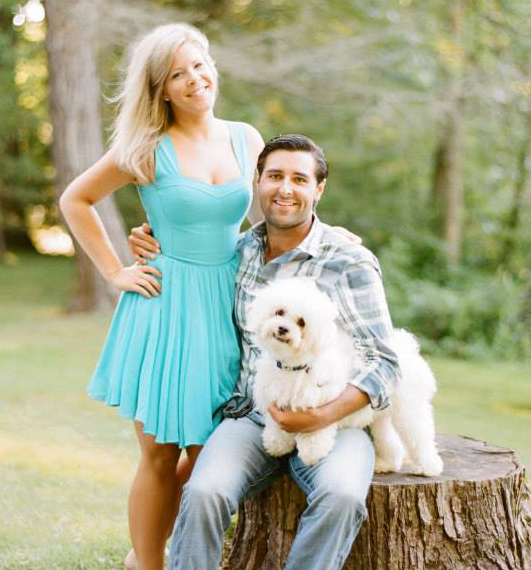

<div id="main" role="main">
  {% include sidebar.html %}
  <article class="page">
    <p>Thanks for visiting my site. I'm a former opera singer turned web developer currently living in Pittsburgh, PA with my wonderful wife and our dog, Winston.</p>
    
    <div class="inline">
      <p>My site serves as an amalgamation of things I find interesting, projects that I've been a part of and all of the various ways you can get in touch with me. Take a look around and feel free to contact me if you're interesting in working on a project together.</p>
      <p>Below you can find a collection of interesting blogs, websites, books, and videos about development that I have come across in the past few years. Hopefully they can be as helpful to you as they have been to me.</p>
    </div>
    <div>
      <h3>Interesting Things:</h3>
      <ul class="half left">
        <li><h4><a href="http://devbootcamp.com/" target="blank">Dev Bootcamp</a></h4></li>
        <li><h4><a href="http://amzn.to/1kQJCRv" target="blank">The Well-Grounded Rubyist</a></h4></li>
        <li><h4><a href="http://bit.ly/1TbvIor" target="blank">Why's (Poignant) Guide to Ruby</a></h4></li>
      </ul>
      <ul class="half right">
        <li><h4><a href="http://bit.ly/21ddIzd" target="blank">Angular Material</a></h4></li>
        <li><h4><a href="http://amzn.to/1R2aY3a" target="blank">Eloquent Javascript</a></h4></li>
        <li><h4><a href="http://bit.ly/1XmWxGG" target="blank">Griffin Caprio's Blog</a></h4></li>
      </ul>
    </div>
  </article>
</div>
